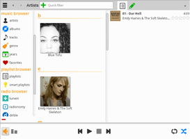
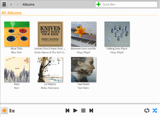
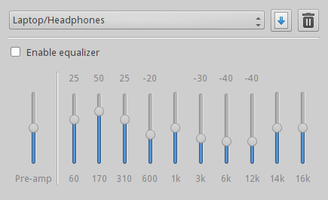

Yarock
Dieser Artikel wurde für die folgenden Ubuntu-Versionen getestet:
Ubuntu 16.04 Xenial Xerus
Ubuntu 14.04 Trusty Tahr
Zum Verständnis dieses Artikels sind folgende Seiten hilfreich:
Yarock  ist ein Audioplayer, bei dem man die Musikauswahl über Coverbilder in den Mittelpunkt stellen kann und damit der früher bei LPs und CDs üblichen Methode sehr nahe kommt. Das Programm wird bereits seit 2010 entwickelt, aber für neue Programme ist es schwer, aufgrund der Vielfalt an vorhandenen Audioplayern Fuß zu fassen. Das Programm ist in verschiedenen Sprachen inkl. einer deutschen Übersetzung verfügbar. Intern wird eine SQLite-Datenbank zur Titelverwaltung verwendet.
ist ein Audioplayer, bei dem man die Musikauswahl über Coverbilder in den Mittelpunkt stellen kann und damit der früher bei LPs und CDs üblichen Methode sehr nahe kommt. Das Programm wird bereits seit 2010 entwickelt, aber für neue Programme ist es schwer, aufgrund der Vielfalt an vorhandenen Audioplayern Fuß zu fassen. Das Programm ist in verschiedenen Sprachen inkl. einer deutschen Übersetzung verfügbar. Intern wird eine SQLite-Datenbank zur Titelverwaltung verwendet.
Neben den üblichen Grundfunktionen bietet Yarock folgende Komfortmerkmale:
Katalogisierung nach verschiedenen Kriterien (zuletzt gespielt, Lieblingssongs, etc.)
Ausgefeilte Suchfunktionen
Bewertungssystem
Internetradio bzw. Zugriff auf die Streaming-Portale SHOUTcast
, Dirble und TuneIn 
Last.fm "Scrobbling"
Integrierter Equalizer
Unterstützung von Replay Gain
Automatischer Cover-Download (auf Wunsch)
Liedwechselanzeige über Benachrichtigungsdienst
Kontextbrowser (Künstlerinformationen, Diskografie, Liedtexte usw.)
Die Audio-Ausgabe erfolgt über das Multimedia-Framework Phonon (neuere Versionen können auch VLC oder Mpv nutzen). Einen ähnlichen Ansatz zur Titelwahl verfolgen Musique und Guayadeque, die aber zur Ausgabe das unter Ubuntu vorinstallierte GStreamer verwendet. Die Programmoberfläche wurde mit Hilfe der Grafikbibliothek Qt realisiert.
Hinweis:
Grundlage dieses Artikels war die Version 0.9.x. Anfang November 2014 ist die Version 1.0 erschienen, die insbesondere optisch überarbeitet wurde.
Installation¶
 Das Programm ist nicht in den offiziellen Paketquellen enthalten. Zur Installation muss man daher auf ein "Personal Package Archiv" (PPA) [1] ausweichen. Alternativ kann Yarock aus dem Quellcode kompiliert werden. Dazu folgt man der Anleitung Installation from source . Der Quellcode selbst ist via Launchpad oder Qt-Apps.org erhältlich.
Das Programm ist nicht in den offiziellen Paketquellen enthalten. Zur Installation muss man daher auf ein "Personal Package Archiv" (PPA) [1] ausweichen. Alternativ kann Yarock aus dem Quellcode kompiliert werden. Dazu folgt man der Anleitung Installation from source . Der Quellcode selbst ist via Launchpad oder Qt-Apps.org erhältlich.
PPA¶
In diesem PPA sind zahlreiche weitere Programme enthalten. Um Problemen mit den offiziellen Paketquellen vorzubeugen, wird empfohlen, das PPA nach der Installation wieder zu deaktivieren.
Adresszeile zum Hinzufügen des PPAs:
ppa:nilarimogard/webupd8
Hinweis!
Zusätzliche Fremdquellen können das System gefährden.
Ein PPA unterstützt nicht zwangsläufig alle Ubuntu-Versionen. Weitere Informationen sind der  PPA-Beschreibung des Eigentümers/Teams nilarimogard zu entnehmen.
PPA-Beschreibung des Eigentümers/Teams nilarimogard zu entnehmen.
Damit Pakete aus dem PPA genutzt werden können, müssen die Paketquellen neu eingelesen werden.
Nach dem Aktualisieren der Paketquellen installiert [2] man das folgende Paket:
yarock (ppa)
 mit apturl
mit apturl
Paketliste zum Kopieren:
sudo apt-get install yarock
sudo aptitude install yarock
Fremdpaket¶
Wer davor zurückscheut, wegen eines einzelnen Pakets gleich ein komplettes PPA einzubinden (und anschließend wieder zu deaktivieren), kann sich auch ein einzelnes Fremdpaket  herunterladen und manuell [3] installieren. Der Paketname lautet yarock_VERSION~webupd8~UBUNTUVERSION_ARCHITEKTUR.deb. Nachteilig ist, dass man sich um Aktualisierungen selbst kümmern muss.
herunterladen und manuell [3] installieren. Der Paketname lautet yarock_VERSION~webupd8~UBUNTUVERSION_ARCHITEKTUR.deb. Nachteilig ist, dass man sich um Aktualisierungen selbst kümmern muss.
Hinweis!
Fremdpakete können das System gefährden.
Anmerkung: Da es bei der Auflösung von Abhängigkeiten zu Problemen kommen kann, wird die Installation eines Fremdpakets nur Fortgeschrittenen empfohlen.
Verwendung¶
Nach erfolgreicher Installation ist das Programm bei Ubuntu-Varianten mit einem Anwendungsmenü unter "Multimedia -> yarock" zu finden. Beim ersten Programmstart [4] öffnen sich zuerst die Einstellungen, wo man lokal vorhandene Musiktitel über "Einstellungen -> Bibliotheks-Einstellungen -> Datenbankeigenschaften" hinzufügen kann (aber nicht muss). Unterordner werden automatisch (rekursiv) eingelesen, so dass es unter Umständen ausreicht, den Ordner /home/BENUTZERNAME/Musik/ anzugeben (BENUTZERNAME bitte anpassen).
|  |
| Ansicht mit Musikquellen und Playlist |
|  |
| Auf Albenauswahl reduzierte Ansicht |
| Minimal-Modus |
|  |
| Equalizer |
Unterstützte Audio-Formate sind u.a. MP3, Ogg Vorbis und FLAC (abhängig vom Multimedia-Framework). Fehlende Codecs werden automatisch nachinstalliert. Empfohlen wird dennoch die Installation des Pakets phonon-backend-vlc.
| Symbole und Funktionen | ||
| Symbol | Funktion | Anmerkung |
| Werkzeuge | Verschiedene Hilfsmittel | |
| Start (Home) | Einstellungen, Zusatzinformationen (Liedtexte, Kontextbrowser), Verlauf, usw. | |
| Musik-Katalog | Sortierung nach verschiedenen Kriterien (Künstler, Alben, Titel, Genre, Veröffentlichungsjahr, Lieblingstitel) | |
| Wiedergabelisten | Vorhandene M3U-, PLS- und XSPF-Dateien (Playlisten) werden automatisch erkannt. Auch für Internetradio nutzbar. | |
| Internetradio | Auswahl des Streaming-Portals und Anzeige verfügbarer Sender | |
| Lokale Dateiauswahl | Vorgegebene Orte sind das Homeverzeichnis und der Root-Ordner / | |
| Minimieren bzw. Maximieren der Menüspalte (links) | Sowohl die Menü- als auch die Playlist-Spalte lassen sich auf Wunsch komplett ausblenden | |
| Lautstärkeregler | ||
| Equalizer | mit verschiedenen Voreinstellungen | |
Einstellungen¶
 Die Konfiguration erfolgt eine übersichtliche Einstellungsseite. Gegliedert ist diese in:
Die Konfiguration erfolgt eine übersichtliche Einstellungsseite. Gegliedert ist diese in:
"Allgemeine Einstellungen" - allgemeine Einstellungen
"Wiedergabe-Einstellungen" - Auswahl des Multimedia-Frameworks (Engine), Replay Gain (de)aktivieren
"Bibliotheks-Einstellungen" - Einrichtung und Verwaltung der Datenbank. Außerdem können hier die lokalen Ordner angegeben werden, deren Inhalt in die Datenbank aufgenommen werden soll.
"Tastenkürzel einrichten" - Tastenkombinationen definieren
"Song info" - Auswahl der Quellen für Liedtexte
"Scrobbler-Einstellungen" - Konfiguration des Last.fm-Kontos
Alle Programmeinstellungen werden im (versteckten) Ordner ~/.config/yarock/ im Homeverzeichnis gespeichert. Hier findet man auch die eingangs erwähnte SQLite-Datenbank, deren Endung .db lautet. Apropos Datenbank: das Programm ist als eines von wenigen in der Lage, auch mehrere (separate) Datenbanken gleichzeitig zu verwalten.
Datenbank aktualisieren¶
Yarock gleicht die in der Datenbank enthaltenen Titel in der Voreinstellung nicht automatisch mit lokal vorhandenen Dateien ab. Dann kann man entweder eine Einstellungsoption benutzen, die Datenbank automatisch beim Programmstart zu aktualisieren oder macht dies manuell über die Schaltfläche "Werkzeuge -> Datenbank-Pflege".
Tastenkürzel¶
Die Vorbelegung ist den Einstellungen zu entnehmen und vorhandene Tastenkombinationen lassen sich dort auch umdefinieren. Das kann teilweise zwingend erforderlich sein, da die Standardeinstellungen je nach Desktop-Umgebung mit bereits vorhandenen kollidieren.
Problembehebung¶
Datenbank kann nicht erstellt werden¶
Wenn das Problem auftritt, dass bei jedem Programmstart erneut der lokale Musikordner angegeben werden muss, fehlt folgendes Paket:
libqt4-sql-sqlite
mit apturl
Paketliste zum Kopieren:
sudo apt-get install libqt4-sql-sqlite
sudo aptitude install libqt4-sql-sqlite
Links¶
Yarock
auf Qt-Apps.orgQt Music Player Yarock 1.1.3 Released, Available In PPA
- Blogbeitrag, 08/2015Yarock – Qt4-Audioplayer mit Extras
- Pro-Linux, 02/2013AudioPlayer
 Übersichtsartikel
Übersichtsartikel
- Erstellt mit Inyoka
-
 2004 – 2017 ubuntuusers.de • Einige Rechte vorbehalten
2004 – 2017 ubuntuusers.de • Einige Rechte vorbehalten
Lizenz • Kontakt • Datenschutz • Impressum • Serverstatus -
Serverhousing gespendet von